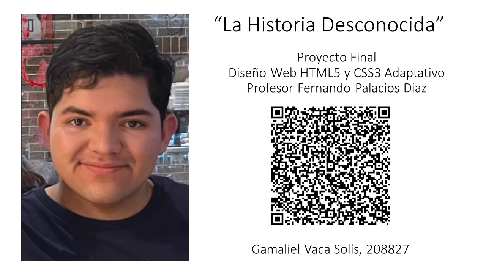

¿Te has preguntado alguna vez cómo era el continente africano antes de la colonización europea? ¿O te has preguntado qué tipo de perros tenían los nativos americanos? Nuestra misión es responder estas preguntas y otras que aún no te has hecho. En este sitio compartimos brevemente relatos históricos de personas y eventos olvidados o ignorados por la mayoría de la población y buscamos ayudar a los entusiastas de la historia comenzar su viaje hacia el interesante territorio de la historia mundial.
